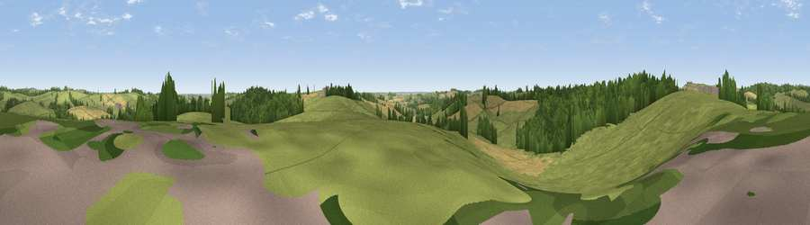

Viewpoint near Loddington
#31635 in England · top 47% of its area beats it · near LoddingtonWhere it is
The exact computed spot (SK 79425 03875). Click the marker for map links.
The view, rendered

A 360° render of this exact spot computed from the terrain model, tree cover and land cover — summer colours, afternoon light, calibrated against photographs of famous viewpoints. Real trees, hedges and buildings will differ in detail.
The panorama
Grey silhouette: terrain skyline in each direction (720 bearings, Earth curvature and refraction included). Dashed green: skyline with trees (+15 m) and buildings (+8 m) as obstacles. Blue strip: how far the ground is visible on each bearing.
Where the view opens
Wedge length = distance to the farthest visible ground on that bearing (vegetation-aware). Rings at 10, 25 and 50 km.
What fills the view
59% grassland · 22% woodland · 18% cropland
Angular shares of the visible panorama (visual magnitude), not map area. Landscape diversity 0.42 (0–1 Shannon).
Key numbers
More beautiful places nearby
The staircase of upgrades: each row has a higher view potential than everything closer. Driving times are estimates from straight-line distance, calibrated against real road routing — check an actual route before setting out.
| Place | Direction | Drive | Score |
|---|---|---|---|
| Viewpoint near Loddington | SSE · 1 km | ~3 min | 43.0 |
| Viewpoint near Belton-in-Rutland | ESE · 2 km | ~4 min | 44.1 |
| Robin-a-Tiptoe Hill | WNW · 2 km | ~5 min | 54.1 |
| Whatborough Hill | NW · 3 km | ~8 min | 55.9 |
| Viewpoint near Cold Newton | W · 8 km | ~16 min | 57.3 |
| Viewpoint near Burrough on the Hill | NNW · 9 km | ~18 min | 66.0 |
| Viewpoint near Stathern | N · 27 km | ~43 min | 66.3 |
| Viewpoint near Stathern | N · 27 km | ~44 min | 67.2 |
52.62683, -0.82804 · source: screening · position refined by local search. Computed location — check access rights before visiting.